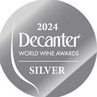
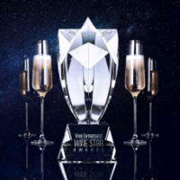

El Concours Mondial de Bruxelles se posiciona, a nivel internacional, como un certamen enológico de referencia. Con nuestro Cabernet Sauvignon obtuvimos la prestigiosa Medalla de Plata 2022. En una competencia directa con vinos de Europa y el oeste de Norteamérica.
Con más de 50 años de historia, estos premios son considerados los más antiguos en el mundo del vino. Fundados con un enfoque científico, los vinos se analizan en laboratorio antes de la concesión de premios. Con nuestro Chaleau Dorado obtuvimos la prestigiosa Medalla de Oro 2020, con los máximos 95 puntos de excelencia.

Los premios Decanter World Wine Awards (DWWA) se consideran los más sólidos en el ámbito vinícola. Su prestigio radica en el riguroso proceso de evaluación a cargo de los mejores catadores y sommeliers a nivel mundial. Con nuestro Malbec obtuvimos la prestigiosa Medalla de Plata 2024, en una ardua competencia con las mejores Bodegas del país y del mundo.

Los premios Wine Star de la revista Wine Enthusiast, con 22 ediciones, se basan en un sistema de nominaciones gestionado por la revista de forma anónima. Por parte de la Revista Wine Enthusiast recimimos con mucho honor el premio Innovador del Año 2023 por nuestro sistema de conservación y añejamiento desarrollado por nuestros enólogos.